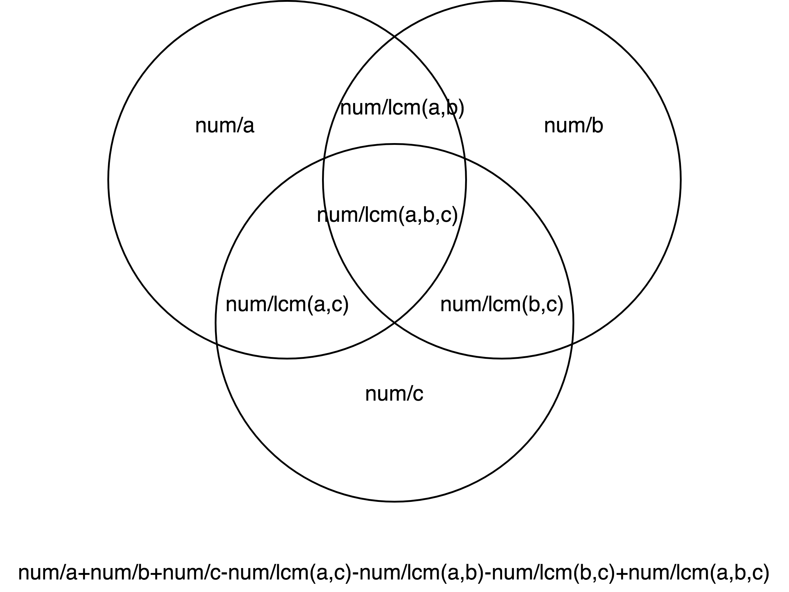

LC 1201 - Ugly Number III
Table of Contents
Ugly Number III
Link: Ugly Number III
Problem Description
Write a program to find the n-th ugly number.
Ugly numbers are positive integers which are divisible by a or b orc.
Example 1:
Input: n = 3, a = 2, b = 3, c = 5
Output: 4
Explanation: The ugly numbers are 2, 3, 4, 5, 6, 8, 9, 10... The 3rd is 4.
Example 2:
Input: n = 4, a = 2, b = 3, c = 4
Output: 6
Explanation: The ugly numbers are 2, 3, 4, 6, 8, 9, 12... The 4th is 6.
Example 3:
Input: n = 5, a = 2, b = 11, c = 13
Output: 10
Explanation: The ugly numbers are 2, 4, 6, 8, 10, 11, 12, 13... The 5th is 10.
Example 4:
Input: n = 1000000000, a = 2, b = 217983653, c = 336916467
Output: 1999999984
Constraints:
1 <= n, a, b, c <= 10^91 <= a * b * c <= 10^18- It’s guaranteed that the result will be in range
[1, 2 * 10^9]
Method & Code
The definition of ugly number is different than previous problem. The ugly number in previous number is number that only contains factor of a, b and c, while in this problem, the ugly number is number that is divisible for either a or b or c.
Therefore, this problem is not a dynamic programming problem. Instead, this problem should use binary search to solve it.
Calculate how many numbers from 1 to NUM are divisible by either a, b or c: (NUM / a) + (NUM / b) + (NUM / c) – (NUM / lcm(a, b)) – (NUM / lcm(b, c)) – (NUM / lcm(a, c)) + (NUM / lcm(a, b, c)).
In this problem, NUM can be 2*(10^9) (or Integer.MAX_VALUE).
Then use binary search to find nth ugly number (under this definition).

/**
* Calculate how many numbers from 1 to NUM are divisible by either a, b or c:
* (NUM / a) + (NUM / b) + (NUM / c) – (NUM / lcm(a, b)) – (NUM / lcm(b, c)) – (NUM / lcm(a, c)) + (NUM / lcm(a, b, c))
* In this problem, NUM can be 2*(10^9) (or Integer.MAX_VALUE).
* Then use binary search to find nth ugly number (under this definition).
*
* @param n nth ugly number
* @param a first prime number
* @param b second prime number
* @param c third prime number
* @return n-th ugly number
*/
public int nthUglyNumber(int n, int a, int b, int c) {
int low = 1, high = Integer.MAX_VALUE, mid;
while (low < high) {
mid = low + (high - low) / 2;
if (count(a, b, c, mid) < n) {
low = mid + 1;
} else {
high = mid;
}
}
/*
* Return the number of previous binary search's right bound.
* From this range [1, high], there are exactly n ugly numbers and the range can not be shrunk. */
return high;
}
/**
* Count how many numbers from 1 to NUM are divisible by either a, b or c by this formula:
* (NUM / a) + (NUM / b) + (NUM / c) – (NUM / lcm(a, b)) – (NUM / lcm(b, c)) – (NUM / lcm(a, c)) + (NUM / lcm(a, b, c))
* Also, lcm(a,b,c) = lcm(a,lcm(b,c)).
*
* @param a number a
* @param b number b
* @param c number c
* @param num upper bound of searching range
* @return LCM of a, b and c
*/
private int count(long a, long b, long c, long num) {
return (int) ((num / a) + (num / b) + (num / c) - (num / lcm(a, b)) - (num / lcm(b, c)) - (num / lcm(a, c)) + (num / lcm(a, lcm(b, c))));
}
/**
* Calculate GCD (Greatest Common Divisor) of a and b.
*
* @param a first number
* @param b second number
* @return GCD of a and b
*/
private long gcd(long a, long b) {
if (a == 0) {
return b;
}
return gcd(b % a, a);
}
/**
* Calculate the LCM (Least Common Multiple) of a and b.
*
* @param a first number
* @param b second number
* @return LCM (Least Common Multiple) of a and b
*/
private long lcm(long a, long b) {
return (a * b) / gcd(a, b);
}